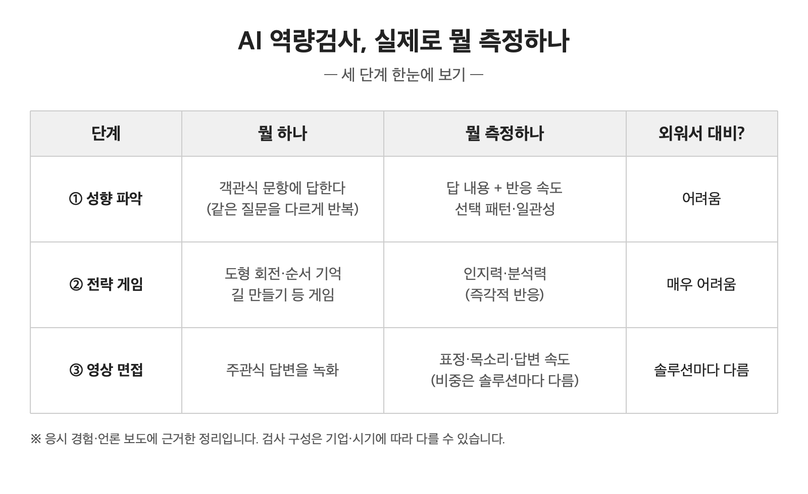

AI 역량검사, 이름은 익숙한데 막상 뭘 보는 검사인지 물으면 답하기 어렵습니다.
찾아보니 가장 흔한 오해가 하나 있었습니다. AI 역량검사는 'AI 면접'이 아닙니다. 국내에서 가장 널리 쓰이는 마이다스인의 검사는 대화형 면접보다 적성검사에 가깝습니다.
공개 자료를 바탕으로 정리해봤습니다.
■ 가장 큰 오해 — 'AI 역량검사 = AI 면접'이 아닙니다
많은 분이 이 둘을 같은 걸로 아는데, 다릅니다.
IT 전문매체 THE AI의 한 기자가 직접 응시해보니, 자기소개나 질문에 쓰는 시간은 적었고 게임과 성향 파악에 들어가는 시간이 훨씬 많았다고 합니다.
마이다스인 백서를 보면, 이 검사는 이력서·자기소개서 분석이나 영상면접 답변 분석은 하지 않습니다. 핵심인 성과역량 검사는 뇌신경과학에 기반한 통계적 방법이며, 여기엔 오히려 'AI 기술을 적용하지 않는다'고 명시돼 있습니다.
정확히 하면, 백서는 AI 기술이 '부분적으로' 사용된다고 밝히고 있습니다. 즉 AI가 전혀 없는 건 아니지만, 'AI 역량검사'라는 이름에서 연상되는 것과 달리 핵심이 보는 건 말솜씨가 아니라 반응 패턴입니다.
■ 그럼 실제로 뭘 측정하나 (세 단계)
※ 아래 내용은 공식 발표가 아니라 응시 경험과 언론 보도에 근거한 정리이며, 검사 구성은 기업·시기에 따라 다를 수 있습니다.
1. 성향 파악
객관식 문항에 답하면 답 내용뿐 아니라 반응 속도·선택 패턴·일관성까지 분석합니다. 성격 검사처럼 보이지만 목적은 성격이 아니라 성과 예측입니다. 같은 질문을 여러 번 다르게 물어 꾸며낸 답을 걸러냅니다.
2. 전략 게임
'도형 회전하기', '도형 순서 기억하기(n-back)', '길 만들기' 같은 게임을 풉니다. 의식적으로 통제하기 어려운 즉각적 반응을 측정합니다. 인지력·분석력을 봅니다.
3. 영상 면접
주관식 답변을 녹화합니다. 다만 마이다스인 백서 기준으로는 이 답변 내용을 AI가 분석하지는 않는다고 밝히고 있고, 표정·목소리 분석 여부는 솔루션마다 다릅니다.

■ 핵심 — 외워서 대비하기 어려운 이유
이 검사가 보는 건 준비한 모범답안이 아니라, 통제하기 어려운 무의식적 반응입니다. 그래서 'AI 면접 꿀팁'으로 외워서 대비하는 데는 한계가 있습니다. 동시에, 바로 그렇기 때문에 무엇을 측정당하는지조차 모르고 응시하면 자신이 어떻게 평가됐는지 영영 알 수 없습니다.
■ 내가 지원한 회사가 AI를 쓰는지 확인하는 법
1. 채용 공고를 다시 읽기 — 'AI 역량검사', 'AI 면접', '온라인 인적성' 같은 단어가 있는지. '온라인 평가'처럼 모호하게 쓰인 경우도 AI일 가능성이 높습니다.
2. 솔루션 이름 검색 — 전형 안내나 응시 링크에 '잡다(JOBDA)', '뷰인터HR', '마이다스인' 같은 이름이 보이면 AI 채용 솔루션입니다.
3. 먼저 본 사람들의 후기 찾기 — '회사명 + AI 면접', '회사명 + 역량검사'로 검색하면 응시 기록이 남아 있는 경우가 많습니다. 다만 개인 경험이라 회사·시기마다 다를 수 있으니 참고만.
도움이 되셨으면 좋겠습니다. AI 전형은 궁금한데 아무도 제대로 정리해주지 않는 게 많더라고요. 그래서 하나씩 정리해서 올리고 있습니다. 궁금한 주제 있으면 댓글로 남겨주세요.
다음 글부터는 올해 1월 시행된 'AI 기본법'이 채용 전형을 어떻게 바꾸는지, 4편으로 나눠 정리해보겠습니다. 매주 수요일에 올릴 예정입니다.
■ 출처 및 확인 정보
- THE AI, [기자수첩] AI 역량검사는 면접이 아니다 (2023.8.28.)
- 마이다스인, 「AI역량검사 백서」 — 공식 페이지 'AI역량검사 바로알기' 게재
- 확인 일자: 2026.7.14. / 응시기 기준 시점이 2023년이라 이후 검사 구성은 달라졌을 수 있습니다
- 본 글은 직접 정리해 온 자료를 커뮤니티용으로 재구성했습니다
※ 정보 제공 목적의 글이며, 특정 검사의 합격 요령을 다루지 않습니다.